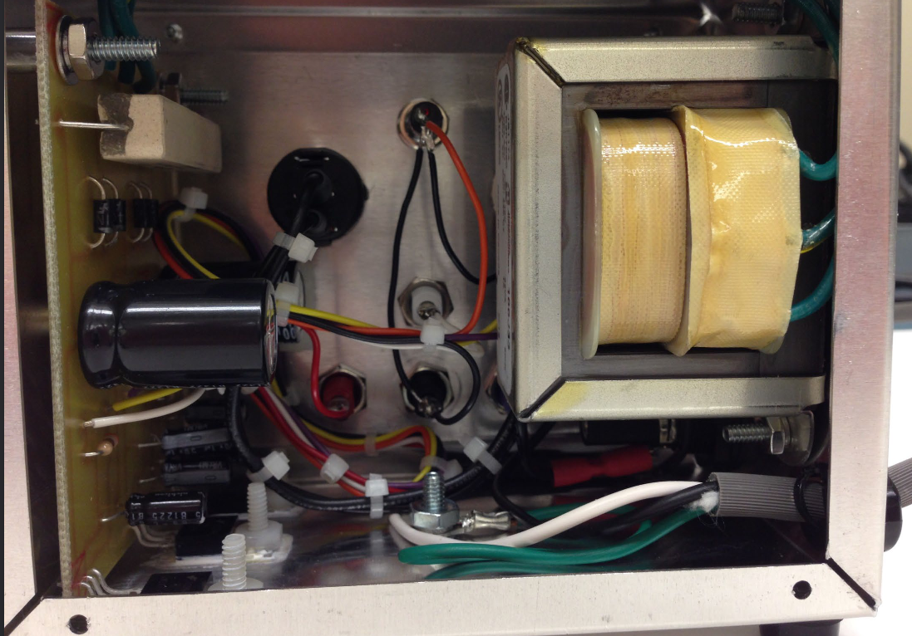

← Back to Portfolio
AC to DC Power Supply Project
Technical Overview: KiCad | SolidWorks | Soldering

Project Description
This project involved the complete lifecycle of an electronics product,
from schematic design in KiCad to final assembly and debugging.
Key Features
-
PCB Design: Designed PCB and schematics using KiCad.
-
Assembly & Debugging: Soldered components onto PCB
and debugged connections using a DMM.
-
Chassis Modification: Modified chassis using
SolidWorks.
-
Power Conversion: Constructed a final product that
converts AC 120V into variable and constant DC with a built-in fuse
and grounding.